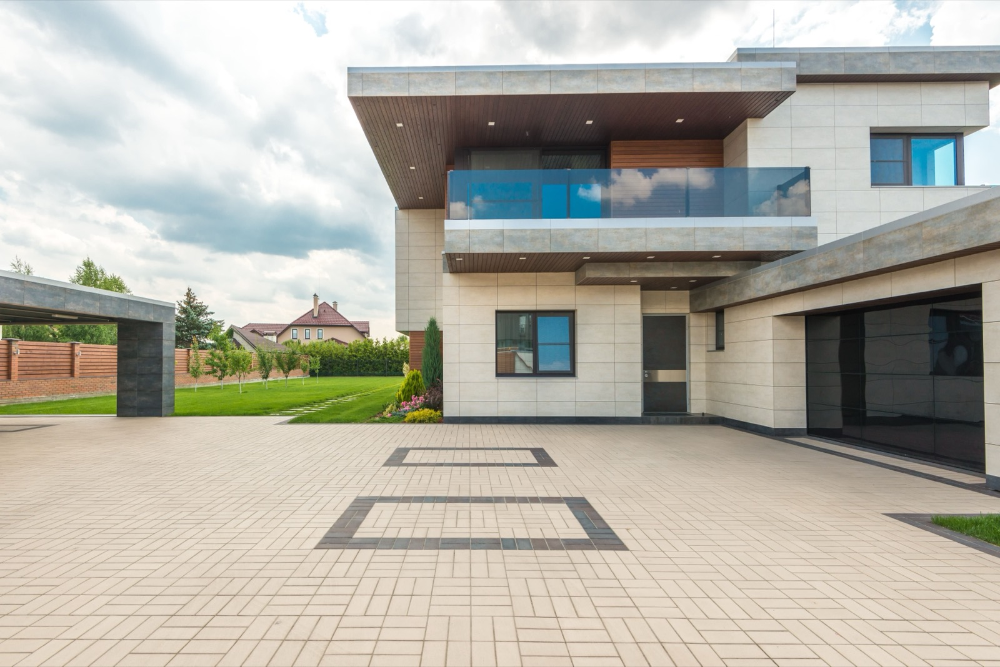

Concrete Flat Roofs (Losa)
The poured reinforced slab: Panama's permanent, near-hurricane-proof roof that doubles as a terrace. Extremely durable. Its whole game is waterproofing and drainage.

Across Panama and much of Latin America, the default roof isn't tile or shingle. It's a flat reinforced-concrete slab, the losa. It's the same reinforced concrete the walls are built from, poured as a single deck. That makes it close to indestructible, fireproof, immune to termites, and about as hurricane-resistant as a roof gets. It also hands you a flat surface you can stand on: a terrace, a rooftop garden, the floor of a future storey. The one thing a concrete roof demands, relentlessly, is waterproofing and drainage.
How the slab is built
A slab roof gets formed and poured like any suspended concrete floor. Formwork goes up, a grid of steel rebar goes in, then the concrete, which cures before the forms come off. Because it's flat, or nearly so, water won't run off on its own, so the whole system leans on a waterproof membrane, whether sheet, liquid, or acrylic, a slight built-in slope, and drains and scuppers that clear a downpour fast. Insulation and a reflective top coat keep the mass of concrete from soaking up and holding heat.
What it costs
Concrete slab roofs sit at $$$ in materials and labour, more than metal or tin upfront, roughly $90 to $170 per square metre for the structural slab plus waterproofing, $8 to $16 a square foot. Costs blur a little because the roof is part of the building's concrete structure. What you're buying is permanence and usable space, and across a 50-plus-year life with decent waterproofing maintenance, the value holds up. Figures move with the span, the thickness, and the finish.
The slab, weighed up
| Factor | Rating | Notes |
|---|---|---|
| Cost | 🔴 | Higher upfront; concrete, steel, and membrane |
| Lifespan | 🟢 | 50-plus years; effectively a permanent structure |
| Hurricane/wind | 🟢 | Nothing to lift or tear; exceptional |
| Fire/termite | 🟢 | Fireproof and termite-proof |
| Usable space | 🟢 | Doubles as a terrace, deck, or future floor |
| Water/drainage | 🔴 | Flat, so it relies on membrane and drains |
| Heat/UV | 🟡 | Mass holds heat; needs insulation and a reflective coat |
| Repairability | 🟡 | Leaks trace to the membrane; re-coat periodically |
| Permitting/finance | 🟢 | The regional standard, no friction |
Where the risk really sits
A concrete slab roof is engineering, not DIY: formwork, rebar, and a pour. But it's also the roof local builders across Panama know best, because it's how a huge share of homes here already go up. The technical risk isn't the concrete, it's the waterproofing and drainage detailing, which is where flat roofs fail when they fail. Insist on a proper membrane system, enough slope to the drains, and a reflective, insulated top layer so the slab doesn't turn into a heat sink. Done right, it's the most permanent, storm-immune roof you can build, and the only one that hands you an extra floor of living space.
Thinking about a roof terrace or a future second floor?
SORA builds fixed-price homes for foreign buyers in Panama and Costa Rica. We pick the roof that suits your site, budget, and how long you plan to keep the house, and we build it to take the tropics.
See 2026 build costs →Frequently asked questions
Do flat concrete roofs leak?
Only when the waterproofing fails. The slab itself is durable and impervious, but because it's flat, water can't run off on its own, so the roof depends on a sound membrane, a slight slope, and working drains. Maintained properly, with periodic re-coating, a concrete roof stays dry for decades.
Is a concrete roof good in hurricanes?
Exceptionally. A monolithic reinforced-concrete slab has nothing to lift, tear, or blow away, so it's among the most storm-resistant roofs there is. It's also fireproof and termite-proof, which adds to its appeal in the tropics.
Does a concrete flat roof make the house hot?
It can, because concrete's mass absorbs and holds heat. The fix is standard practice: insulation above or below the slab and a reflective, often white, top coat, which together stop the mass from radiating heat into the rooms below.
Sources & verification
Figures in this guide were checked against primary and authoritative sources on 27 July 2026. Immigration, tax, and cost figures change — always confirm the current rules with the official body or a licensed professional before acting.
- Bob Vila — flat roof types, materials & cost
- Forbes Home — flat roof cost & waterproofing